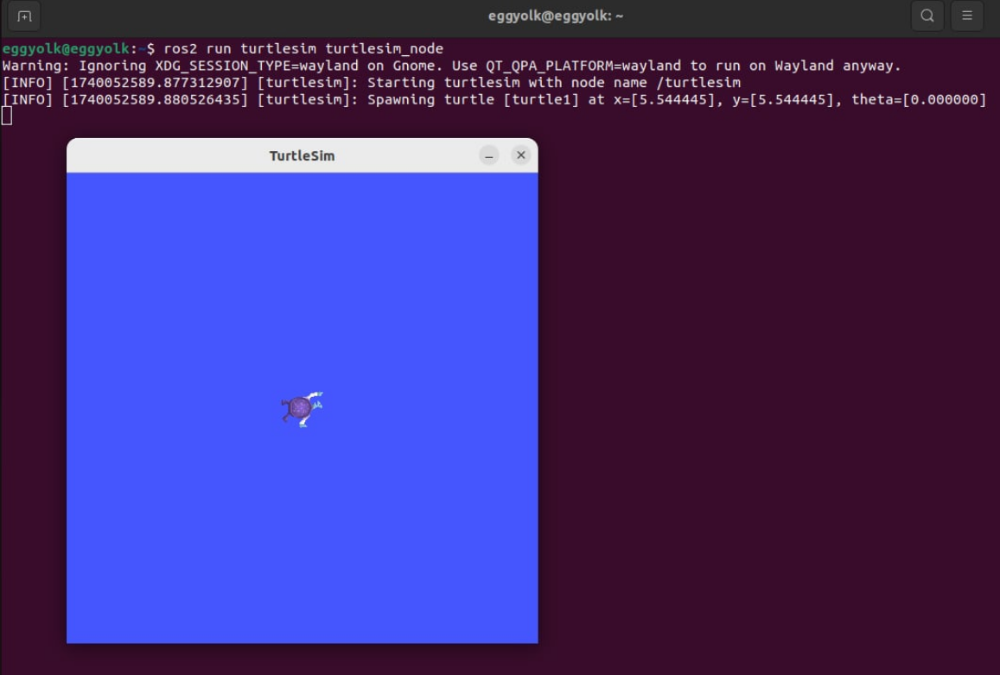
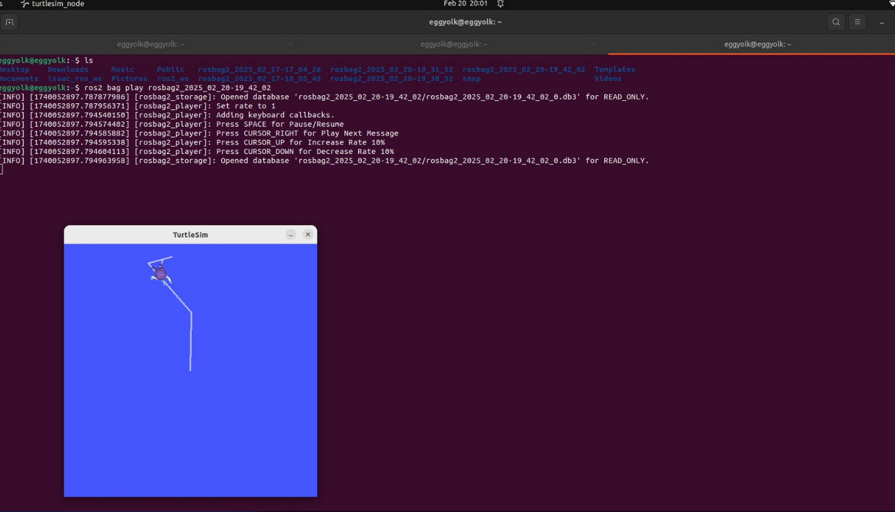

Concepts
ROS Graph and rqt
The ROS computational graph consists of various interconnected components such as nodes, topics, services and actions that work together to perform robotic functions. This graph forms the foundation of how data flows within a ROS-based system, enabling robots to process information and react accordingly.
The components are represented graphically using the rqt_graph tool, which facilitates the visualization of node interactions with topics and services. It helps users understand how data flows across the system through demonstrating nodes as blocks and the arrows that connect them. Developers can analyze system design, find message flow issues, and improve efficiency with rqt_graph.
Recording and Playing Messages with rosbag2
The rosbag2 is an essential tool in ROS 2 that allows users to record and replay messages. For example, a robot is navigating a predefined path using sensor data, the developers can use rosbag2 to record the sensor readings, control commands, and robot state during the initial test runs. The same recorded data can be replayed in a simulation environment to analyze the robot's performance, adjust parameters, or debug unexpected behaviors without requiring the actual robot hardware.
Debugging with ROS2 Doctor
Ros2doctor is a diagnostic tool in ROS2 that helps the developer identify and troubleshoot issues in their ROS2 environment. It checks system configurations, installed ROS 2 packages, network settings, and other important aspects of the ROS 2 setup. The tool provides useful recommendations and warnings when it detects potential problems.
Programming
RQT Graph
For the demonstration, we will use the turtlesim simulator and rqt tools to demonstrate the common ROS2 packages. This simulator will demonstrate what you can achieve with a real robot or a robot simulation later on, it shows you what ROS 2 performs at the most fundamental level.
- Use the Turtlesim and run this code to start the turtlesim.
ros2 run turtlesim turtlesim_node
A new window should appear like the one below.

- Open a new terminal and run this teleoperation program for turtlesim.
ros2 run turtlesim turtle_teleop_key
This node will show you how to control the turtle in the first node with your keyboard.
- Launch the rqt_graph on a separate terminal.
rqt_graph
This will display a graphical representation of the nodes and their connection in your ROS 2 system. You can now observe how the turtlesim node interacts with the other nodes in the system.
Do not remove the terminals running. We will use that for the next section.
ROS Bag 2
- Recording and playing back massages with rosbag2. To start recording messages open a new terminal and run the code below.
ros2 bag record -a
- Control the turtle in the simulator using your keyboard. The keys are showed in the control node, stop the recording and replay the session. You can see the list of the recorded massages by running
ls. To replay the messages, run the code below.
ros2 bag play <bag_file>

This will show the recorded messages from the nodes. It will show you a replay of the movements in the simulator.
ROS2 Doctor
- Running system diagnostic tool ROS2 Doctor.
ros2 doctor --report
This command will analyze the ROS2 environment and provide diagnostic information related to the setup, any issues with the nodes, topics and overall health of the ROS2 environment.
-
View the report from ROS2 Doctor.